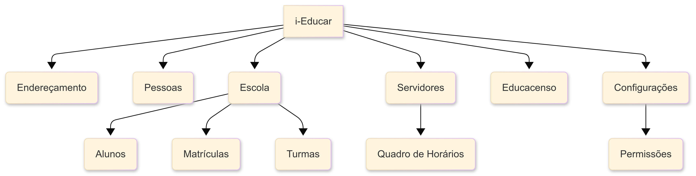

Objeto de Estudo (Software)
Aplicação escolhida
O i-Educar é um software livre de gestão escolar, totalmente online, projetado para otimizar a administração de redes de ensino municipais. A plataforma centraliza informações pedagógicas e de ensino, permitindo que secretários escolares, professores, coordenadores e gestores acessem dados em tempo real. Com isso, o i-Educar contribui para a redução do uso de papel, a eliminação da duplicidade de documentos e a racionalização do trabalho dos servidores públicos.
Desenvolvido originalmente pela prefeitura de Itajaí (SC) e disponibilizado no Portal do Software Público do Governo Federal em 2008, o i-Educar atende às necessidades das Secretarias de Educação e das escolas públicas de todo o Brasil.
Link para o YouTube: Conheça o i-Educar
Módulos e Funcionalidades
O i-Educar é organizado em módulos que abrangem todas as áreas da gestão escolar:
- Endereçamento: Cadastro e gerenciamento de informações de endereço, como ruas, bairros e CEPs.
- Pessoas: Cadastro de pessoas físicas e jurídicas, incluindo pais, alunos e professores, além de informações como deficiências, religião e cor/raça.
- Escola: O módulo central do sistema, onde são gerenciados os cadastros de escolas, alunos, matrículas, cursos, séries e turmas.
- Servidores: Cadastro de todos os servidores da rede de ensino, incluindo docentes e outros funcionários. O módulo também permite o gerenciamento do quadro de horários das turmas.
- Educacenso: Módulo dedicado à exportação de dados para o Censo Escolar e à importação de informações para a atualização do sistema.
- Configurações: Permite o gerenciamento de permissões de usuários, a realização de backups e o acesso a outras ferramentas administrativas.
Arquitetura e Implicações para a Avaliação
A arquitetura do i-Educar é modular, o que facilita a análise de componentes específicos do sistema. O diagrama abaixo representa a estrutura de alto nível do software.

Essa estrutura de código aberto tem implicações diretas na nossa avaliação:
- O que é possível medir: Dado o acesso completo ao código-fonte no GitHub, podemos realizar uma análise estática aprofundada da Manutenibilidade do software, utilizando ferramentas para medir a complexidade do código, a duplicação e a aderência a padrões de desenvolvimento. Da mesma forma, a Segurança pode ser avaliada através da busca por vulnerabilidades conhecidas no código.
- O que não é possível medir (Limitações): A avaliação da Confiabilidade será limitada. Não temos acesso aos ambientes de produção das prefeituras que utilizam o sistema, o que nos impede de medir métricas de campo, como o Tempo Médio Entre Falhas (MTBF). Nossa análise se concentrará em indicadores preventivos, como a cobertura de testes automatizados presentes no repositório.
Tecnologias utilizadas
O projeto utiliza majoritariamente PHP, com o uso de bibliotecas como:
Além disso, também faz uso de algumas bibliotecas JavaScript, como o framework Bootstrap.
Links úteis
- Repositório no GitHub
- Fórum da Comunidade
- Telegram da Comunidade
- Guia de Contribuição
- Guia de Instalação
- Código de Conduta
Classificação do Produto
O i-Educar se classifica como um Sistema de Gestão Educacional (SGE) de código aberto. Ele é projetado para ser uma solução completa para a administração de redes de ensino, com foco em usabilidade, centralização de dados e conformidade com as regulamentações educacionais do Brasil, como o Censo Escolar.
ODS Relacionados
Aqui descrevemos os Objetivos de Desenvolvimento Sustentável com os quais o i-Educar se conecta, com metas/indicadores relevantes e justificativas de como o software pode contribuir para alcançá-los.
ODS 4 — Educação de Qualidade
Descrição: Assegurar educação inclusiva, equitativa e de qualidade, e promover oportunidades de aprendizagem ao longo da vida para todos. [1]
Metas relevantes (Brasil / IPEA):
- Meta 4.1: Até 2030, garantir que todas as meninas e meninos completem o ensino primário e secundário gratuito, equitativo e de qualidade, com resultados de aprendizagem eficazes.
- Meta 4.3: Assegurar igualdade de acesso para todos os gêneros à educação técnica, profissional e superior de qualidade, a preços acessíveis, incluindo universidade.
- Meta 4.4: Aumentar substancialmente o número de jovens e adultos com habilidades relevantes, inclusive competências técnicas e profissionais, para emprego, trabalho decente e empreendedorismo.
- Meta 4.a: Construir e melhorar instalações físicas para educação, apropriadas para crianças, sensíveis às deficiências e ao gênero, e que proporcionem ambientes de aprendizagem seguros, inclusivos e eficazes.
Indicadores relacionados:
- Proporção de jovens de 15-17 anos matriculados no ensino médio.
- Proficiência em leitura e matemática em diferentes fases do ensino fundamental.
- Infraestrutura escolar (acessibilidade, segurança, salas e equipamentos).
Relação com o i-Educar:
- Fornece dados precisos sobre matrícula, frequência, conclusão e desempenho acadêmico, apoiando o monitoramento das metas 4.1 e 4.3.
- Identifica desigualdades regionais e socioeconômicas, permitindo intervenções mais justas.
- Apoia a gestão de recursos e relatórios que evidenciem deficiências de infraestrutura.
ODS 10 — Redução das Desigualdades
Descrição: Reduzir a desigualdade dentro dos países e entre eles. [2]
Metas relevantes (Brasil / IPEA):
- Meta 10.1: Até 2030, sustentar o crescimento da renda dos 40% mais pobres a uma taxa maior que a média nacional.
- Meta 10.2: Empoderar e promover inclusão social, econômica e política de todos, independentemente de idade, gênero, deficiência, raça, etnia ou condição econômica.
Indicadores relacionados:
- Taxa de crescimento da renda dos 40% mais pobres em comparação à média nacional.
- Medidas de inclusão em acesso à educação, conectividade digital e recursos de gestão.
Relação com o i-Educar:
- Reduz desigualdades de acesso à informação e gestão entre redes escolares.
- Identifica grupos vulneráveis (por localização, deficiência ou condição socioeconômica), apoiando políticas inclusivas.
- Democratiza acesso à tecnologia por ser um sistema open source, sem custos de licenciamento.
ODS 16 — Paz, Justiça e Instituições Eficazes
Descrição: Promover sociedades pacíficas e inclusivas, garantir acesso à justiça para todos e construir instituições eficazes, responsáveis e transparentes. [3]
Meta relevante (Brasil / IPEA):
- Meta 16.6: Desenvolver instituições eficazes, responsáveis e transparentes em todos os níveis.
Relação com o i-Educar:
- Mantém registros escolares auditáveis e confiáveis, fortalecendo a transparência.
- Apoia a eficiência administrativa, reduz duplicidades e melhora o controle institucional.
- Favorece a confiança pública ao disponibilizar informações de forma organizada e acessível.